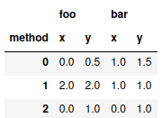

When preparing a table with experimental results for publication, one often wishes to highlight the output of extreme cells, for example by putting them in bold.
However, pandas does not readily support this use case. The closest
one gets with stock pandas is table.style.highlight_max(axis=1)
which highlights the maximum values in yellow. Note that this does not
work properly with multi-indexed columns: Here only one extreme value
per row will be highlighted.
So, what one wishes is to automatically output a pandas dataframe as latex while highlighting certain column-sets using their maximum and others by using their minimum. Let's do that!
Code
We start by creating a small test dataframe:
import pandas as pd
test = pd.DataFrame({"foo" : [0,2,0,0.5,2,1],
"bar":[1,1,0,1.5,1,1],
"method": ["x","x","x","y","y","y"]},
index=[0,1,2,0,1,2]).pivot(columns="method")
test

Now, define the function which does the magic:
def bold_extreme_values(data, format_string="%.2f", max_=True):
if max_:
extrema = data != data.max()
else:
extrema = data != data.min()
bolded = data.apply(lambda x : "\\textbf{%s}" % format_string % x)
formatted = data.apply(lambda x : format_string % x)
return formatted.where(extrema, bolded)
Additionally, we have to tell python which columns we would like to highlight by the maximum and for which to use the minimum:
col_show_max = { "foo": True, "bar" : False}
Now we run our method on the dataframe and output the result:
for col in test.columns.get_level_values(0).unique():
test[col] = test[col].apply(lambda data : bold_extreme_values(data, max_=col_show_max[col]),axis=1)
print(test.to_latex(escape=False))
\begin{tabular}{lllll}
\toprule
{} & \multicolumn{2}{l}{foo} & \multicolumn{2}{l}{bar} \\
method & x & y & x & y \\
\midrule
0 & 0.00 & \textbf{0.50} & \textbf{1.00} & 1.50 \\
1 & \textbf{2.00} & \textbf{2.00} & \textbf{1.00} & \textbf{1.00} \\
2 & 0.00 & \textbf{1.00} & \textbf{0.00} & 1.00 \\
\bottomrule
\end{tabular}
And that's it :)
EDIT: Martin Isaksson built upon this, see here. Thanks for letting me know!